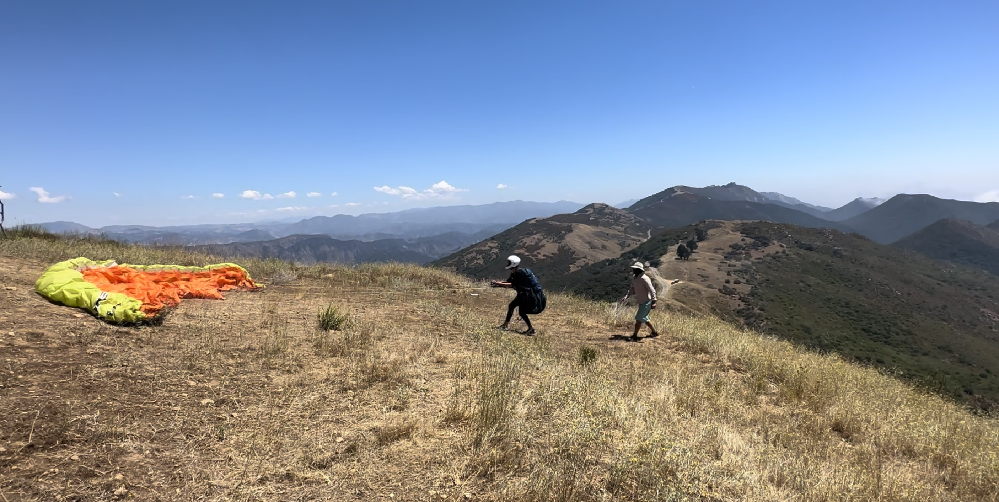
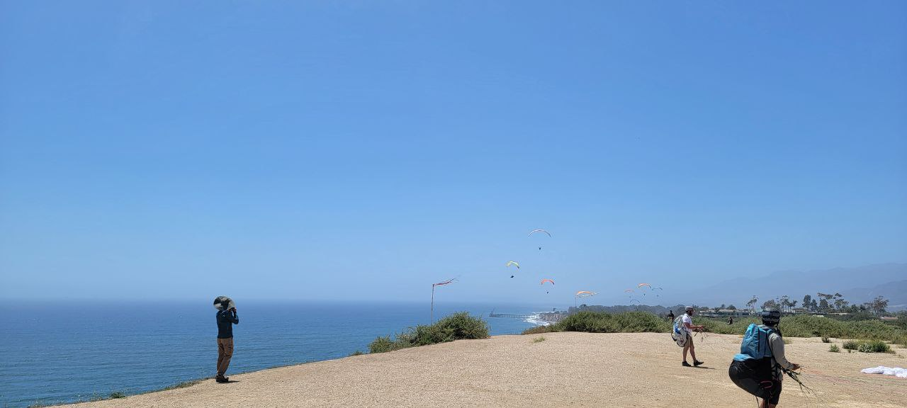
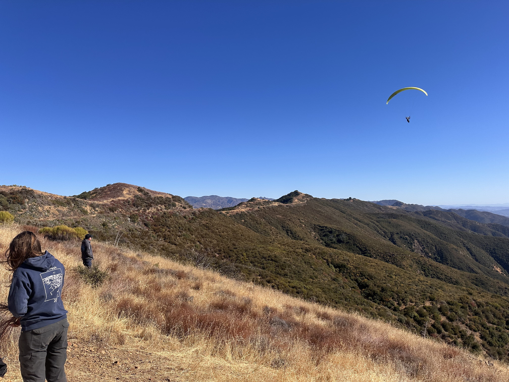

Elings Flight Park
Training hill, ground handling, and some thermal flying.
Main SBSA launch and landing locations.
Training hill, ground handling, and some thermal flying.
Undeveloped sites associated with SBSA.

Main mountain launch for first mountain flights and XC.

Official landing site for VOR mountain flights.

Primary Santa Barbara launch for thermal flying.

Lower launch protected from North winds.
Thermal and ridge option in Carpinteria.

Secondary mountain site. Details pending.
For info only, unassociated with SBSA. Not maintained by SBSA. Fly at your own risk.

Designated beach landing area inside Santa Barbara limits.
Coastal ridge soaring in the Douglas Preserve. Lots of dogs!
Ridge soaring within SB Airport airspace.

Carpinteria coastal ridge soaring site for all levels.

Occasional experienced pilot site in stronger SE setups.
LZ at the foothill of Skyport.
Ojai thermal flying site. Details pending.
Reference map for restricted no-land areas around Santa Barbara flying routes.